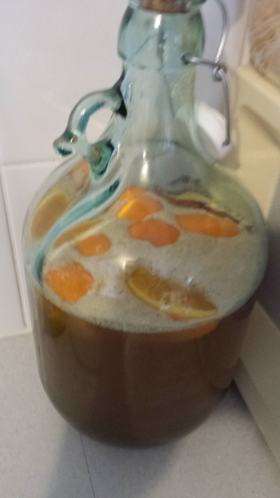

Joe's Ancient Orange Mead
Joe’s Ancient Orange mead is a simple beginners mead, which takes only 20 minutes to make.
I first heard about mead when browsing the Aussie Home Brewer non-beer forum. Having never tried mead before, I purchased a bottle of Maxwell Mead. It has an interesting taste. It’s fairly sweet, and initially reminded me of port. For me, it’s best served slightly warm.

I used this JAO mead recipe to create my batch. It was quite simple to make, and fairly inexpensive. I used some standard Australian honey from the supermarket, but the recipe could be improved by using fresh, locally sourced honey.
Recipe
Recipe Volume: 5L
Yeast: 1 tsp Tandaco bread yeast
Fermentables: 1.6kg honey
Calculated Original Gravity: Unknown
Hop additions: None
Other additions:
- 1 Cinnimon stick
- 25 raisins
- 1 orange, cut into 8ths
- 1 clove
Procedure:
- Mark off 3.8L on the side of the 5L demijohn.
- Clean and sterilize the demijohn
- Dissolve the honey in warm water, and pour into the demijohn
- Wash the orange to remove any pesiticides. Cut it into 8 slices, and place in the demijohn (skin and all)
- Add 25 raisins to the demijohn, as well as the clove and cinnimon stick.
- Fill with water to the 3.8L mark you made earlier.
- Close the demijohn with the lid or a bung, and shake well to aerate the mixture.
- Wait until the mixture returns to room temperature, then pitch 1tsp of bread yeast.
- After 3 or 4 days, top up with water to make 5L.
Fermentation:
Try to leave the demijohn in a cool, dry location. A kitchen cupboard would work well. As per the instructions on the original thread, once it’s fermenting, don’t touch it. Leave it for a couple of months, waiting for the mixture to clear on it’s own.
Results:
Awaiting fermentation to complete.
Amarillo Pale Ale
If you’re just starting out in Homebrewing, you may have bought yourself a homebrew kit from your local home brew store, or maybe a large chain store. My advice would be, don’t follow the instructions on the can of malt you get.
Ok maybe the first time you brew, use the can and follow the instructions. You’ve got the kit there, and it’ll be beer none the less.
However before you set off to do your second brew, read John Palmer’s amazing, free, online book, How To Brew. It started me on the track to actually crafting beers, rather than just re-creating a soulless, store-bought one.

This beer is the first beer I’ve ever brewed by boiling malt extract, and adding hops according to a schedule. I had an idea about the type of beer I wanted to make. I’m really loving bitter, heavily hopped pale ales at the moment, so I decided to try and create my own.
After looking for recipes online, I took my ideas to my local homebrew store, and with some recommendations from the brewer there, came up with the following recipe.
Recipe
Recipe Volume: 25L
Yeast: Safale - 05
Malts: 2x 1.5kg Morgan’s Pale Lager liquid malt extract
Calculated Original Gravity: 1.046
Hop additions:
- 50g Northern Brewer @ 60 min
- 30g Amarillo @ 30 min
- 15g Amarillo @ 15 min
- 15g Amarillo dry hop after 3 days
Calculated IBUs: Unknown
Procedure:
- Boiled 13 Litres of water, turned off heat and stirred in extract.
- Returned to boiling.
- Added 45g of Northern Brewer hops after the hot break.
- Boiled 30 minutes and added 30g of Amarillo hops.
- Boiled further 15 minutes and added 15g of Amarillo hops.
- Boiled further 15 minutes and turned off heat.
- Cooled pot in ice water bath to reduce temperature.
- Added wort to fermenter, and topped up with water to 15L.
- Pitched yeast.
Fermentation:
Fermenting at between 24 and 26 degrees celsius. Adding 15g of Amarillo hops after 3 days.
Results:
This beer was very nice. A couple of people I gave bottles to enjoyed it, and compared it to some store-bought beers. I’m not convinced it was as good as that, but it was a tasty beer.
The beer was quite bitter, and had a little amarillo aroma as you were drinking it. However it wasn’t the IPA style that I was going for. It was probably too bitter, and not aromatic enough.
Next time I brew this beer, I think I’ll be reducing the amount of bittering hops, and increasing the amount of hops later in the boil, along with 2 to 3 times the amount of dry hops.
Roguelike idea: Terra Australis
I’ve been playing a lot of Cataclysm DDA lately, and have been enjoying the survival aspect of it. Right from the start you’re in life-threatening danger, which requires a lot more strategy and planning than a typical hack-and-slash roguelike.
Right now I’m also listening to the Roguelike Radio episode on Unreal World. Unreal World is a survival roguelike set in Iron Age Finland. I like the idea that it’s not set in a fantasy world, which has been done over a million times by now. The health/death system sounds a lot like the Dwarf Fortress system, where you don’t have health points as such, but you can get injured in various ways. These injuries may or may not be life threatening, and can have effects on your characters ability to perform different actions.
This gave me the idea of creating a survival roguelike based on the Australian environment right before it was colonised by the British.
The time and location could be interesting for a survival roguelike for a lot of reasons:
- The environment is harsh. There is a meme currently that everything in Australia is out to kill you. There is some truth to that; there are a lot of dangerous creatures around here.
- An interesting culture with their own fantasy and lore.
- Small, nomadic communities with their alliances would make for a great world to explore.
Mechanic ideas
- Typical roguelike permadeath.
- An age system. You can die of old age, which should be an extremely difficult goal to achieve. As you get older, you should get injured easier and become slower.
- A crafting system, where you can make boomerangs, spears, woomeras.
- British, Dutch and Islander explorers that you can meet.
- A tribal faction diplomacy system. Each tribe should form and break alliances with each other, which you can participate in.
- Some mild fantasy based on the lore of the time.